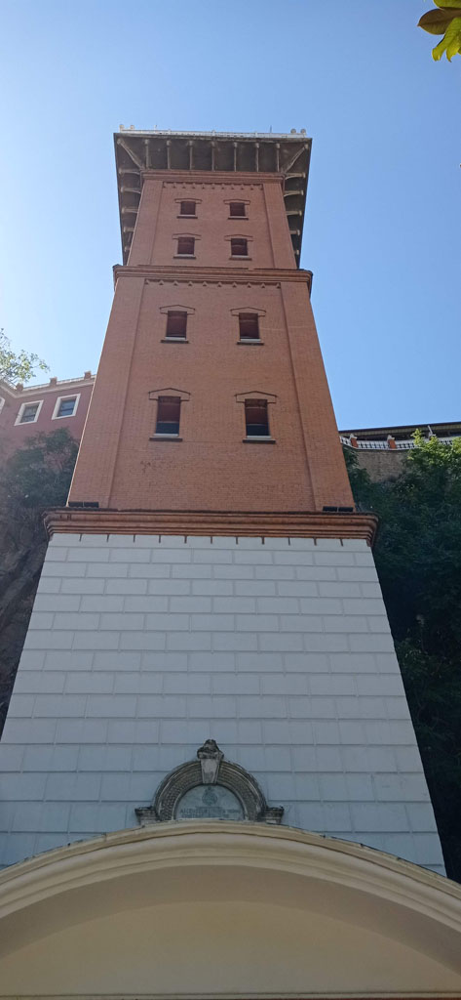
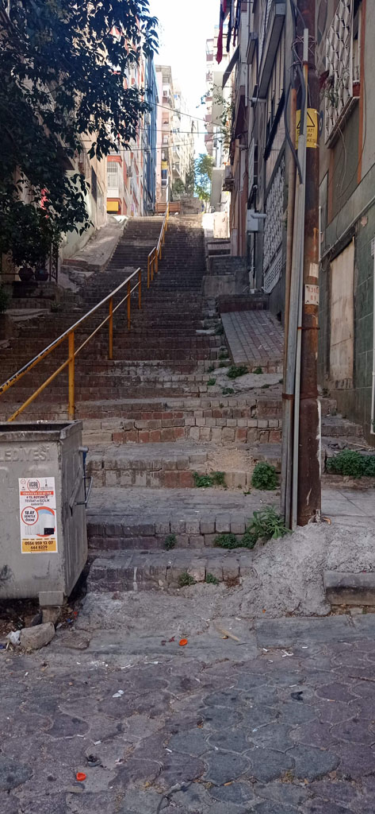
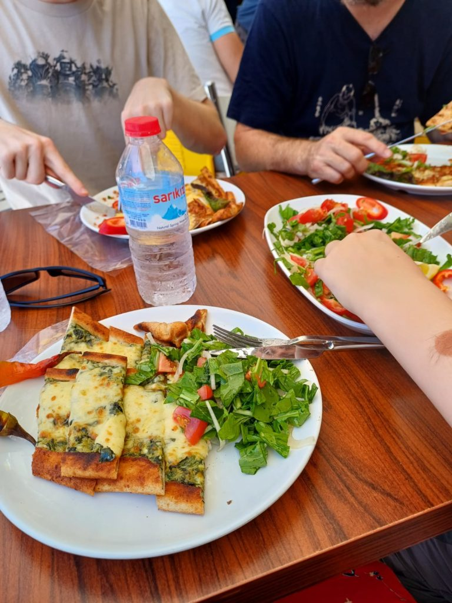
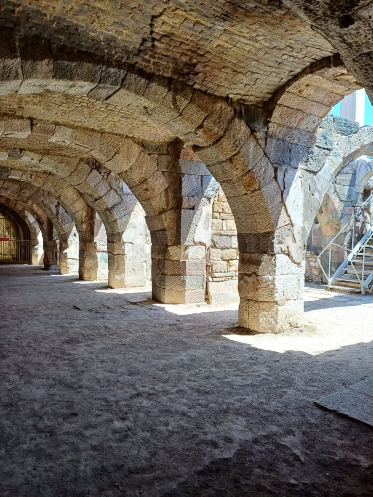
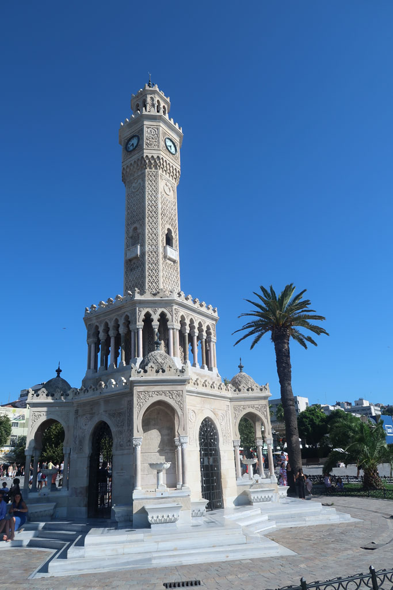
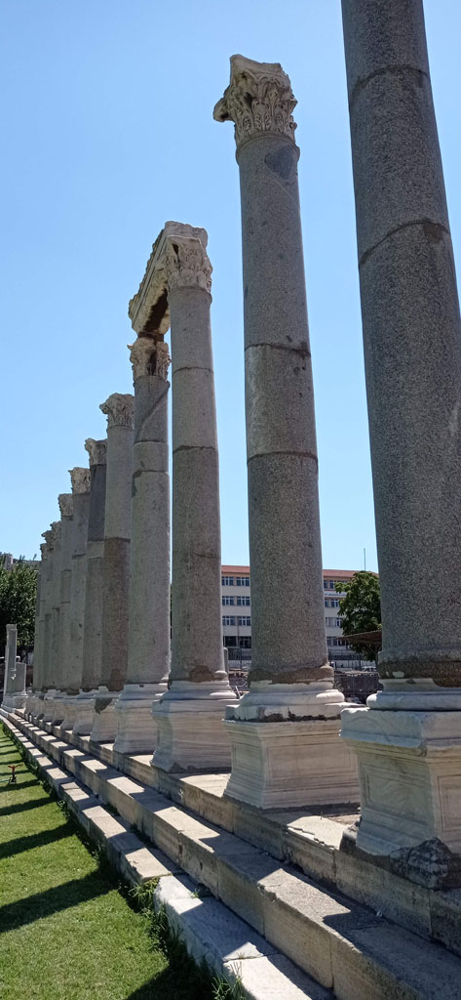
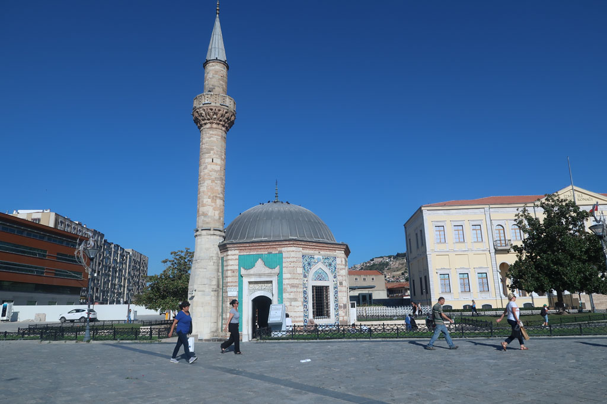

Turquie 2023 / Visite Izmir
9h00 Réveil
10h00 Après le petit déjeuner, direction l’Asensor d’Izmir en passant par la tour de l’horloge


11h00 Nous repartons vers le quartier de Varyant. Achat de boissons et pause çai sur la route du musée archéologique (x4= 360)
12h30 Retour dans le quartier du bazar dans une section “artiste”. on profite du passage devant une lokantasi sympathique pour manger quelques pidés.

13h30 visite du site de l’agora / basilique (4x130tl)

15h00 retour à l’hôtel pour une courte pause.
16h30 direction la mer en passant par le bazar, nous prenons un petit cafés sur l’embarcadère.
18h30 Nous reprenons nos marques par rapport à l’année dernière et retournons dans notre petite cantine près de la mosquée. Retour à l’hôtel par les petites rues.
20h30 Profitons un peu de la terrasse/jardin de l’hôtel après une bonne douche


